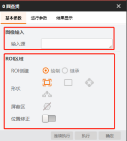
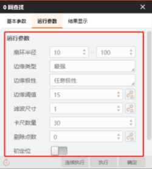

问题描述
环境：VM4.2及以上 + VS2013及以上
问题：如何设置模块的输入图像、模块参数及ROI区域？
解决方法
VM模块的输入主要包含两部分：基本参数（图像输入、ROI区域）、运行参数，以圆查找为例。除了图像源模块以及无输入图像的模块。


通过SDK二次开发时，可通过代码修改模块的输入参数。以下内容以圆查找模块为例进行介绍。
-
设置模块输入图像，添加相应的命名空间 IMVSCircleFindModuCs 。
Mat matImagee = Cv2.ImRead("D:\\3.ProjectCode\\VM4.3\\1.bmp", ImreadModes.Grayscale);
IMVSCircleFindModuTool circleFindModuTool = VmSolution.Instance["流程3.圆查找1"] as IMVSCircleFindModuTool;
circleFindModuTool.ModuParams.InputImage = StImgbase;
-
通过调用对象中 ModuParams 的属性设置模块运行参数。
IMVSCircleFindModuTool circleFindModuTool = VmSolution.Instance["流程1.圆查找1"] as IMVSCircleFindModuTool;
circleFindModuTool.ModuParams.EdgeThresh = 30;
-
设置指定模块的ROI区域。
IMVSCircleFindModuTool tool = (IMVSCircleFindModuTool)VmSolution.Instance["流程1.圆查找1"];
tool.ModuParams.ModuRoiManager.RoiRectangle = rectBox;
- 注意
-
设置【基本参数】，参数配置窗口界面不会显示所设置的参数。此时若模块运行，则参数永久有效；若流程运行，则参数一次有效。
-
设置【运行参数】，参数配置窗口界面会显示所设置的参数。此时模块和流程运行，参数均永久有效。